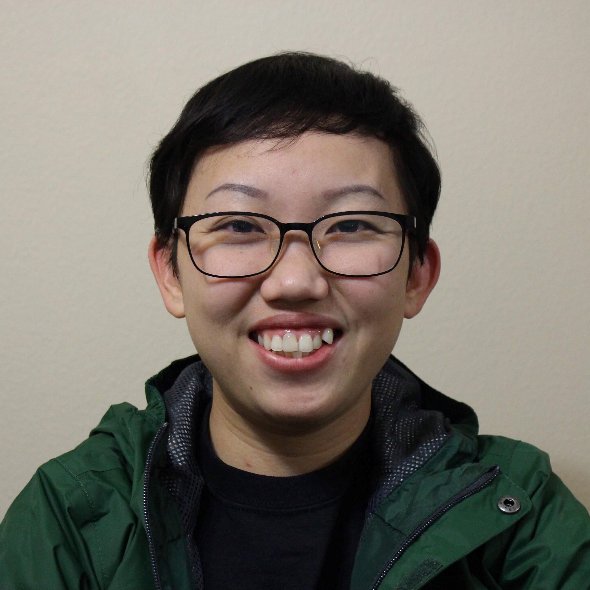

Long Beach, California • malenahuy789@gmail.com • (562) 302-7976

Education
California State University of Long Beach
Bachelor of Science: Business Administration - Information System
Relevant Course Work: Business Intelligence, Spreadsheets Model, Web Application, Python
Class of 2020
Long Beach City College
Associate of Science: Business Adminstration
Received a Certificate of Accomplishment in Money and Banking
Class of 2017
Project
Study Organize Learn (SOL)
An application that helps students to improve their learning skills by providing them some types of studying tools,
time management, and organizational skills
Documented diagrams using UML structural standard: Use Case Description,
Use Case Diagram, CRUD Matrix, Activity Diagram, System Sequence Diagram (SSD),
Full Developed Use Case Description, Domain Model Class Diagram, and Design Class Diagram
Designed and developed a prototype using Justinmind
Came in 1st place in the class competition
Hotel Doctor
A program which helps translate raw data from an Excel spreadsheet into a useful information,
so it can be use by the managers to improve their hotels’ quality
Used Python programming libraries such as textBlob, statistics, and wordcloud
Shown the min, max, range, standard deviation, average rating, sentiment analysis, and commonly used words
Main finding is to compare other hotels to each other and view the position that one might hold within a list of competitors
YMCA (Young Men Christian Association)
Helped the company to identify the problems and generated the solutions for the company by using the data that we gathered from the company's social media sites
Collected the data from Review and Star Ratings in Google, Facebook, and Yelp
Used Python programming libraries such as statistics and wordcloud
Generated sentiment analysis, average rating, and commonly used words
Used Tableau Software to create a clear Visualization of childbirth
Main finding is overall people have a slightly positive feeling toward the company;
also, the company can do marketing toward children's classes since the company already have the program, and there is potential growth for the children in the city
Experience
Cashier and Waitress, The Sea Food Bar, Redondo Beach
January 2018-March 2018
Greeted customers in a friendly manner and accurately recorded orders, which resulted in returning customers
Answered questions about menu selections and made recommendations when requested
Handled sales transactions (cash and credit)
Effectively communicated with the kitchen staff when the customer had a special request
Delivered the food with friendly and fast service, which resulted in customers' satisfaction
Checked on guests to ensure satisfaction with each food course
Routinely clean the tables, counters, floors, and windows, hence increased efficiency
Inventoried and maintained beverage supplies
Trained and mentored new staff members
Student Assistant, Long Beach City College, Long Beach
March 2015-June 2017
Interacted with students from around the world and assisted them in admission processes,
as the result increased self-management and communications skill
Translated (English to Khmer) which reached more students in Cambodia
Answered phone calls, took messages, and organized mails
Set up and operate office equipment (desktops, printers, scanners, copiers, and projectors)
Leadership/ Involvement
SCPD Executive Mentoring Program (EMP), California State University of Long Beach
September 2019 - May 2020
Selected as one of the 20 students to participate in specialized workshops that develop professional skills
SCPD Business Professional Certificate (BPC), California State University of Long Beach
September 2019 - May 2020
Attended workshops which helped develop professional skills
Associated Student, Inc. (ASI) Beach Pantry, California State University of Long Beach
October 2019 - May 2020
Set-up and tear down of large events
Packed 10,000 meals to fight local hunger
Vice President of International Student Fellowship, CSU of Long Beach
February 2018- June2019
Introduced the program participants
Helped plan club meeting
Youth and Children Club Leader, Shalom Life Chapel Center, Cambodia
2010-2013
Planned, implemented, and supervised weekly programs
Led games and songs for groups of 20-90 participants